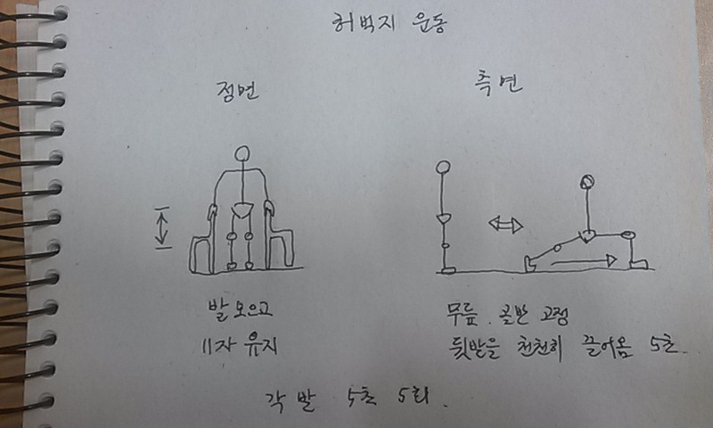
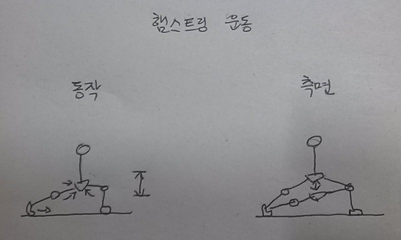

앞굽이
앞굽이의 방법론
- 의자 두개를 손이 닿게 몸의 양옆에 두고 곧게 선다. 그 상태로 손으로 의자를 잡고 앉았다 일어나는 것이 허벅지 운동이다.
- 11자로 선 다리를 한 발을 뒤로뺀다. 모든 동작에서 다리를 움직일 때는 천천히 발을 끌듯이 움직인다
- 원하는 효과를 얻기 위해서는 바닥을 미끄러지듯 발을 움직여야 한다.
앞발과 뒷발 모두 뒷꿈치를 들고 실시한다.
앞굽이 최대가동범위 운동
- 한발은 서있고 다른 한 발을 뒤로 천천히 일자로 뺀다. 뒤로 빼다보면 딱 걸리는 느낌이 들것이다. 앞무릎은 수평이고 뒷무릎은 최대한 일자인 상태가 그 지점이 최대지점이다.
- 뒷다리를 더 뺀다면 골반과 무릎이 더 틀어지고 앞무릎도 뒤로 빠져 수평을 벗어나 안정적인 상태가 안된다.

앞굽이 깔짝운동
- 앞굽이상태에서 살짝만 상하운동을 하는 것이다.
- 빨리하면 무릎이 고정되지 않고 반동이 생겨 다칠 우려가 있으니 이 운동도 최대한 천천히 한다
- 깔짝 운동을 할때 가동범위는 최소로 한다 힘을 주는 순간 힘을 뺀다는 생각으로.
